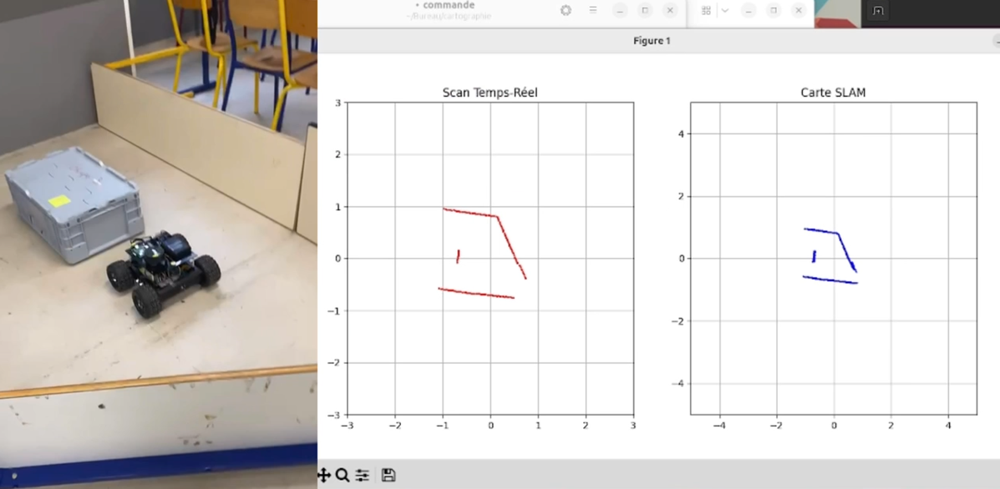

Integrated Autonomous Robot — “Projet Fil Rouge”
An intelligent autonomous robot built in the “Projet Fil Rouge”: autonomous navigation with obstacle avoidance, manual teleoperation via GUI, voice commands, object detection & color recognition, and automatic target pursuit. Status: Complete.